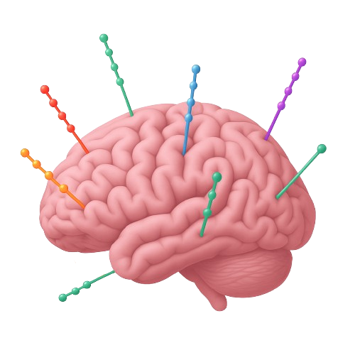

Featured Project · Deployed at Hospital del Mar
SlicerSEEG
Problem: Neurosurgeons spend 4+ hours per patient manually identifying SEEG electrode positions in post-operative CT scans, creating critical bottlenecks in epilepsy surgery workflows.
Approach: Built a 3D Slicer extension combining a MONAI-based 3D U-Net for brain extraction (93.6% Dice), Random Forest threshold prediction (R² = 0.99), LightGBM confidence scoring (98.8% within 2mm), and DBSCAN + Louvain clustering for trajectory reconstruction.
Impact: Reduces electrode identification from 4+ hours to ~30 minutes. Now in clinical use at Hospital del Mar's Epilepsy Unit in collaboration with the Center for Brain and Cognition (UPF). Bachelor's thesis graded 10/10 with honors.
- Python
- 3D Slicer
- MONAI
- LightGBM
